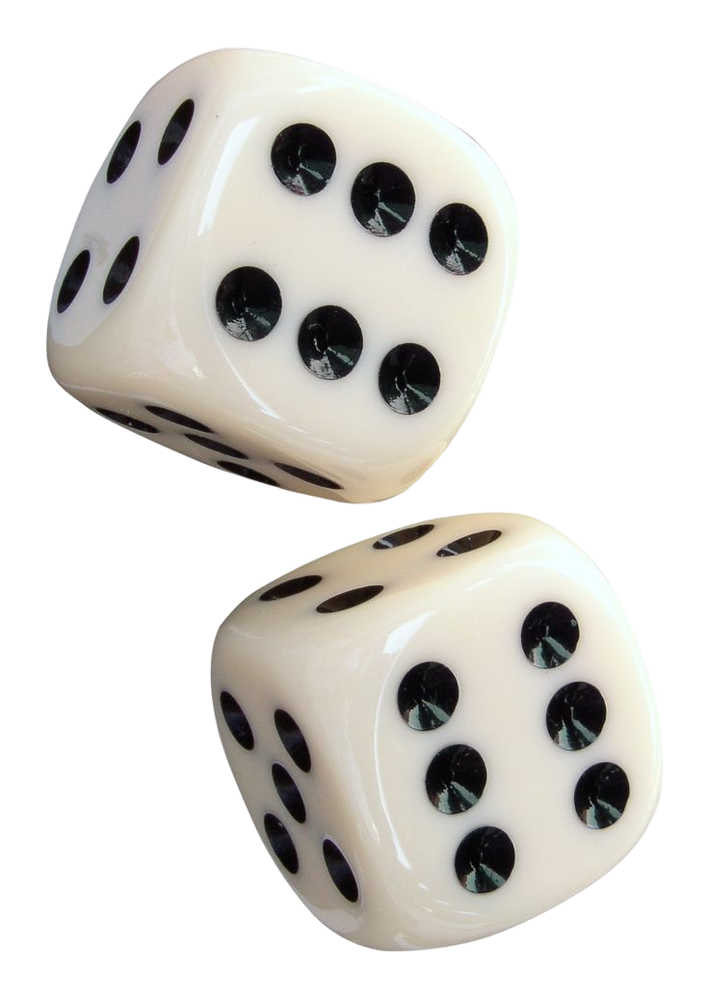
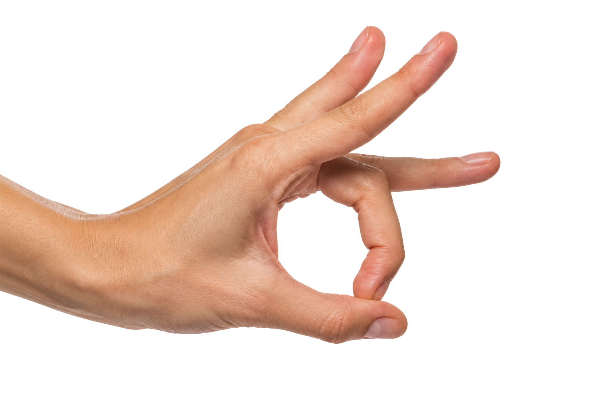
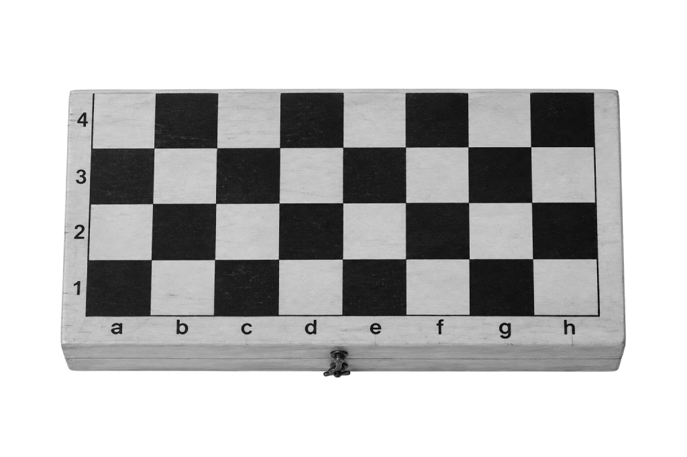

Уголкиигра на шахматной доске, которой научил дедушка
Играть

Вышибалыв простонародье эта игра называется “чапаев”
Играть

Уголки 2игра, где нужно стадо шашек переместить из угла в угол
Игра в разработке